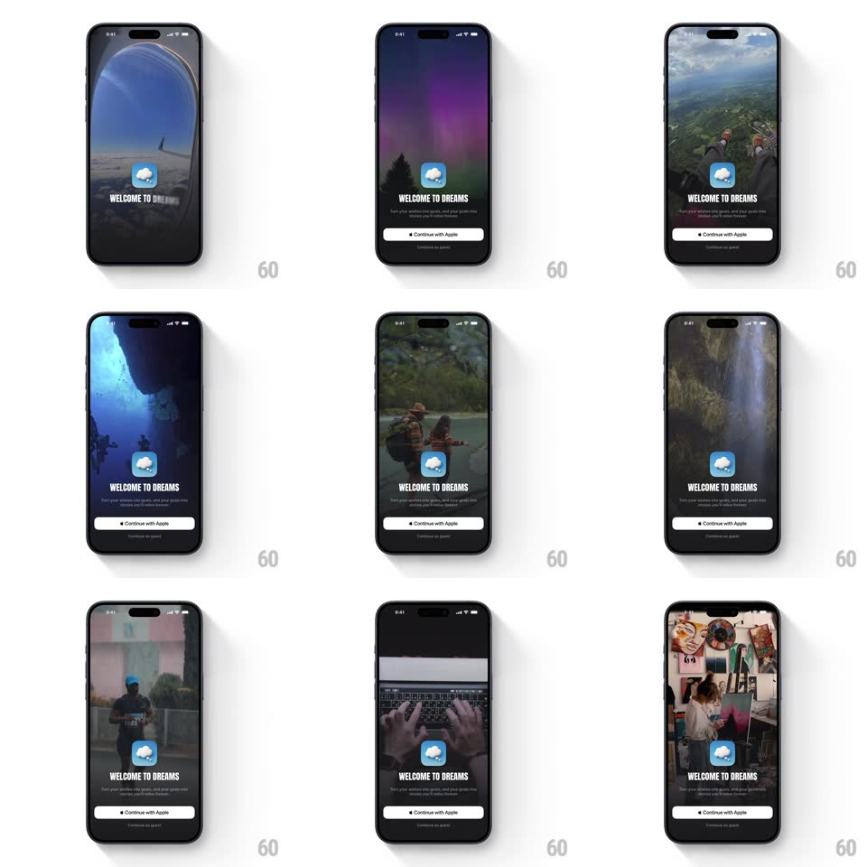

Media
Frame-by-frame

Rebuild this animation 1:1: Dreams' onboarding splash - a looping full-bleed video montage of dream destinations (airplane window, aurora, peaks, divers, lakes, waterfalls) behind the cloud logo, WELCOME TO DREAMS, and the Apple sign-in.

Rebuild this animation 1:1: Dreams' onboarding splash - a looping full-bleed video montage of dream destinations (airplane window, aurora, peaks, divers, lakes, waterfalls) behind the cloud logo, WELCOME TO DREAMS, and the Apple sign-in. ## Integration Integration: stack-agnostic spec - springs given as stiffness/damping, timed motions as duration + curve; map every value to your framework and animation library of choice. ## Scene Dreams onboarding: a full-bleed looping video of travel moments cycling (airplane window over the wing, purple aurora over forest, mountain viewpoint, cave diving, canoeing, waterfall, typing, art studio). Centered: the cloud logo, "WELCOME TO DREAMS" in all caps, one line of sub copy, a white "Continue with Apple" button, and "Continue as guest" beneath. ## Motion spec Pattern: looping background video montage with staggered fade-in text. - The video starts from black (fade in 800ms) and crossfades between scenes every ~3.5s (1s dissolve) - continuous, never hard-cutting. - A dark gradient scrim sits at the bottom third (opacity 0.55) so the text stays readable over any scene. - Text sequence starts at 500ms: the cloud logo fades in with a 12px rise (400ms), "WELCOME TO DREAMS" 200ms later (same treatment), the sub copy 200ms after that, then Continue with Apple (300ms) and Continue as guest (200ms, 100ms apart). - The video loops indefinitely behind the static text stack; scenes keep ambient motion (water, clouds, light) at natural speed. - The status bar stays light-content over every scene. ## Calibration - The scrim is part of the design - never let white text sit on un-darkened footage. - Crossfades only; no slides, zooms, or Ken Burns on the video itself. ## Reduced motion Show a single static frame (the aurora scene) with the full text stack fading in once. ## Don't miss - The logo is a soft rounded-square cloud mark - it never animates after entry. - Buttons are pinned near the bottom with the guest option as plain text below the Apple button.